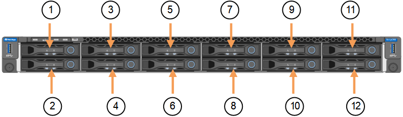

開始使用
開始使用
更換 SGF6112 應用裝置
 建議變更
建議變更
如果設備無法正常運作或故障、您可能需要更換設備。
-
您的替換產品的零件編號與您要更換的產品相同。
-
您有標籤可識別連接至本產品的每條纜線。
-
您有 "實際放置設備"。
當您更換產品時、將無法存取此節點。StorageGRID如果設備運作正常、您可以在本程序開始時執行管制關機。

|
如果您要在安裝StorageGRID 完更新功能之前更換產品、StorageGRID 完成此程序後、可能無法立即存取《產品安裝程式（到此安裝程式）」。雖然您可以從與應用裝置位於同一子網路上的其他主機存取 StorageGRID 應用裝置安裝程式、但您無法從其他子網路上的主機存取。此情況應在15分鐘內自行解決（當原始應用裝置的任何ARP快取項目逾時時）、或者您可以從本機路由器或閘道手動清除任何舊的ARP快取項目、以立即清除此狀況。 |
-
顯示應用裝置的目前組態並加以記錄。
-
登入要更換的應用裝置：
-
輸入下列命令：
ssh admin@grid_node_IP -
輸入中所列的密碼
Passwords.txt檔案： -
輸入下列命令以切換至root：
su - -
輸入中所列的密碼
Passwords.txt檔案：當您以root登入時、提示會從變更
$至#。
-
-
輸入：
run-host-command ipmitool lan print顯示應用裝置目前的 BMC 組態。
-
-
如果此 StorageGRID 應用裝置上的任何網路介面都設定為使用 DHCP 、則您需要更新 DHCP 伺服器上的永久 DHCP 租用指派、以參照替換應用裝置的 MAC 位址。如此可確保設備已指派預期的 IP 位址。
請聯絡您的網路或 DHCP 伺服器管理員、以更新永久的 DHCP 租用指派。系統管理員可以從 DHCP 伺服器記錄檔中判斷更換設備的 MAC 位址、或是檢查裝置乙太網路連接埠所連接之交換器中的 MAC 位址表。
-
拆下並更換產品：
-
標記纜線、然後拔下纜線和任何網路收發器。
為避免效能降低、請勿在纜線上扭轉、摺疊、夾住或踩踏。 -
請注意故障設備中可更換元件（兩個電源供應器、三個 NIC 和十二個 SSD ）的位置。
12 個磁碟機位於機箱的下列位置（圖示為卸下擋板的機箱正面）：

磁碟機 1.
HDD00
2.
HDD01
3.
HDD02
4.
HDD03
5.
HDD04
6.
HDD05
7.
HDD06
8.
HDD07
9.
HDD08
10.
HDD09
11.
HDD10
12.
HDD11.
-
將可更換的元件移至更換的應用裝置。
請遵循所提供的維護指示、重新安裝可更換的元件。

如果您想要保留磁碟機上的資料、請務必將 SSD 磁碟機插入故障應用裝置中所佔用的磁碟機插槽。如果您不這麼做、應用裝置安裝程式會顯示警告訊息、您必須將磁碟機放入正確的插槽、然後重新啟動應用裝置、設備才能重新加入網格。 -
更換纜線和任何光纖收發器。
-
-
開啟產品電源。
-
如果您更換的應用裝置已啟用 SED 磁碟機的硬碟機加密、則您必須 "輸入磁碟機加密密碼" 可在第一次啓動更換設備時訪問加密的驅動器。
-
請等待產品重新加入網格。如果應用裝置未重新加入網格、請遵循 StorageGRID 應用裝置安裝程式首頁上的指示來解決任何問題。

為了避免資料遺失、如果 Appliance Installer 指出需要變更實體硬體、例如將磁碟機移至不同的插槽、請先關閉應用裝置電源、再進行硬體變更。 -
如果您更換的應用裝置使用金鑰管理伺服器（ KMS ）來管理節點加密的加密金鑰、則可能需要額外的組態、節點才能加入網格。如果節點未自動加入網格、請確定這些組態設定已傳輸至新應用裝置、並手動設定任何沒有預期組態的設定：
-
登入更換的應用裝置：
-
輸入下列命令：
ssh admin@grid_node_IP -
輸入中所列的密碼
Passwords.txt檔案： -
輸入下列命令以切換至root：
su - -
輸入中所列的密碼
Passwords.txt檔案：
-
-
恢復所更換設備的 BMC 網路連線能力。有兩種選擇：
-
使用靜態 IP 、網路遮罩和閘道
-
使用 DHCP 取得 IP 、網路遮罩和閘道
-
若要還原 BMC 組態以使用靜態 IP 、網路遮罩和閘道、請輸入下列命令：
run-host-command ipmitool lan set 1 ipsrc staticrun-host-command ipmitool lan set 1 ipaddr Appliance_IP
run-host-command ipmitool lan set 1 netmask Netmask_IP -
run-host-command ipmitool lan set 1 defgw ipaddr Default_gateway-
若要還原 BMC 組態以使用 DHCP 取得 IP 、網路遮罩和閘道、請輸入下列命令：
run-host-command ipmitool lan set 1 ipsrc dhcp
-
-
還原 BMC 網路連線之後、請連線至 BMC 介面以稽核及還原您可能已套用的任何其他自訂 BMC 組態。例如、您應該確認 SNMP 設陷目的地和電子郵件通知的設定。請參閱 "設定 BMC 介面"。
-
確認應用裝置節點出現在Grid Manager中、且未顯示任何警示。
更換零件後、請將故障零件歸還給NetApp、如套件隨附的RMA指示所述。請參閱 "零件退貨擴大機；更換" 頁面以取得更多資訊。